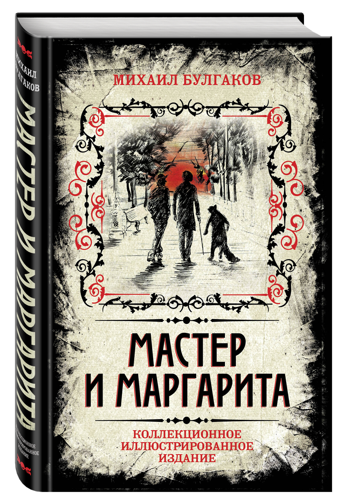

Михаил Булгаков «Мастер и Маргарита»
Один из самых загадочных и удивительных романов XX века. Роман «Мастер и Маргарита» — визитная карточка Михаила Афанасьевича Булгакова. Более десяти лет Булгаков работал над книгой, которая стала его романом-судьбой, романом-завещанием. В «Мастере и Маргарите» есть все: веселое озорство и щемящая печаль, романтическая любовь и колдовское наваждение, магическая тайна и безрассудная игра с нечистой силой.
